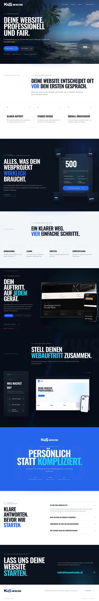

01 / 04
KMU Web Studio
Für mein eigenes kleines Webstudio habe ich die ganze Website selbst gestaltet und umgesetzt. Interessierte stellen ihr Projekt dort in einem Konfigurator in wenigen Schritten zusammen.
kmuwebstudio.ch
